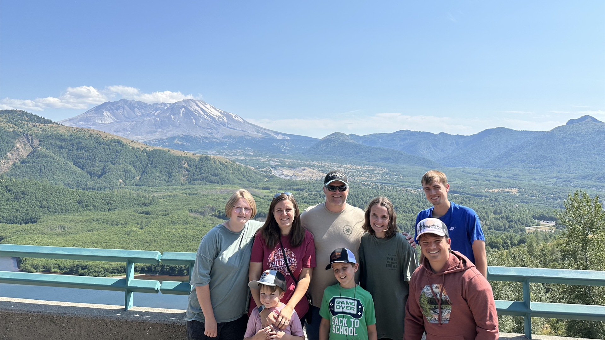
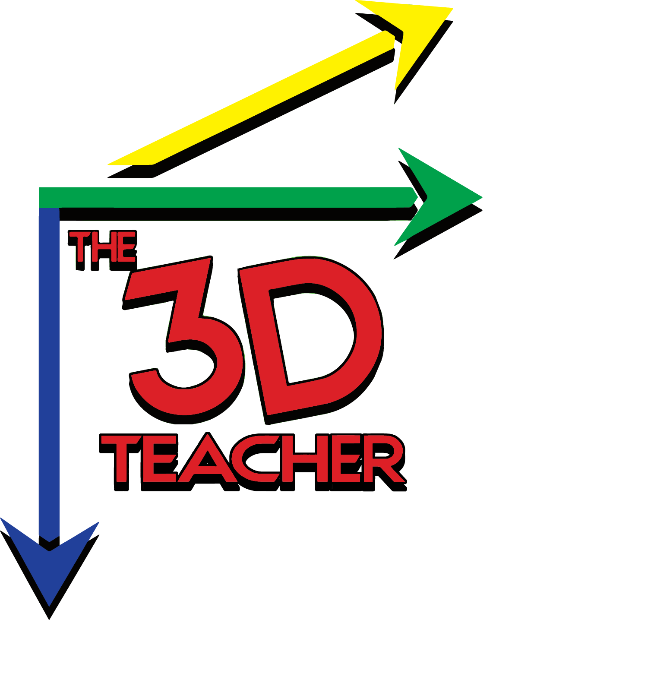
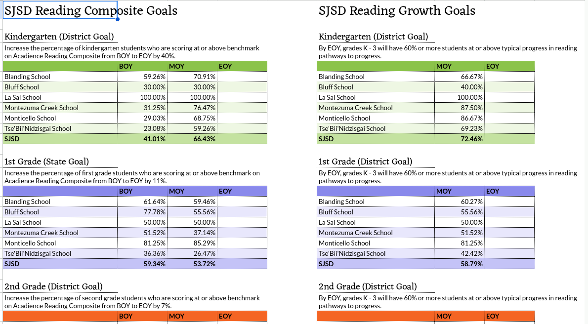
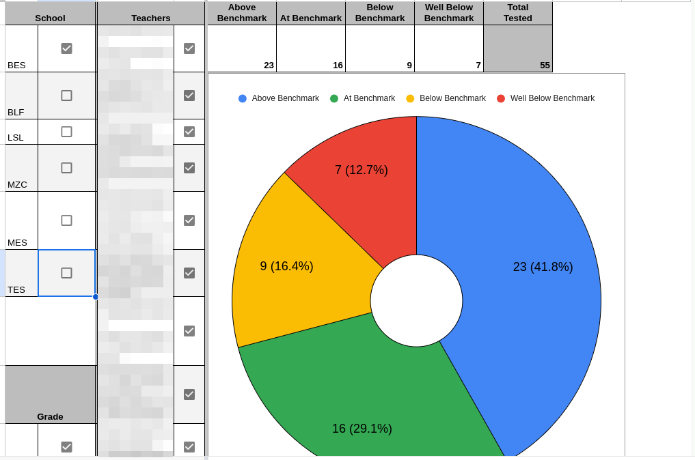
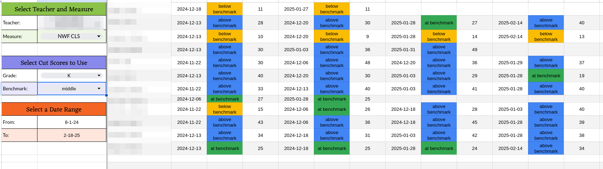
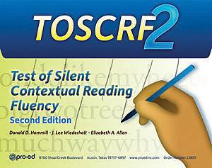
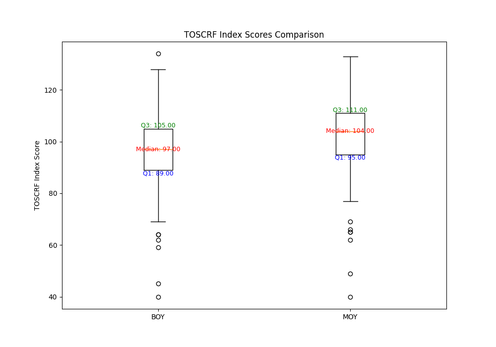

import gspread
import pandas as pd
def update_bm(benchmarks_csv):
# Read .csv into Pandas for parsing
df = pd.read_csv(benchmarks_csv)
# Get only the data that we need
# Define columns for reading and math
reading_cols = [
'School Name',
'Teacher Last Name',
'Teacher First Name',
'Student Last Name',
'Student First Name',
'Student Grade Level',
'Benchmark Period',
'FSF Score',
'FSF Status',
'LNF Score',
'PSF Score',
'PSF Status',
'NWF CLS Score',
'NWF CLS Status',
'NWF WWR Score',
'NWF WWR Status',
'ORF WC Score',
'ORF WC Status',
'ORF Accuracy Score',
'ORF Accuracy Status',
'Retell Score',
'Retell Status',
'Retell Quality Score',
'Retell Quality Status',
'Maze Adjusted Score',
'Maze Status',
'Reading Composite Score',
'Reading Composite Status',
'Reading Composite Pathway',
'Lexile Reading'
]
math_cols = [
'School Name',
'Teacher Last Name',
'Teacher First Name',
'Student Last Name',
'Student First Name',
'Student Grade Level',
'Benchmark Period',
'BQD Score',
'BQD Status',
'NIF Score',
'NIF Status',
'NNF Score',
'NNF Status',
'AQD Score',
'AQD Status',
'MNF Score',
'MNF Status',
'Comp Score',
'Comp Status',
'C&A Score',
'C&A Status',
'Math Composite Score',
'Math Composite Status',
'Math Composite Pathway'
]
# Create discreet reading and math dataframes
reading_df = df.loc[:, reading_cols]
math_df = df.loc[:, math_cols]
# Authenticate with gspread
gc = gspread.service_account('creds/service_account.json')
# Get reading spreadsheet
reading_worksheet = gc.open('24-25 Acadience Reading Data')
reading_sheet = reading_worksheet.worksheet('reading_bm')
# Get math spreadsheet
math_worksheet = gc.open('24-25 Acadience Math Data')
math_sheet = math_worksheet.worksheet('math_bm')
# Write dataframes to sheets
reading_sheet.update([reading_df.columns.values.tolist()] + reading_df.fillna('').values.tolist())
math_sheet.update([math_df.columns.values.tolist()] + math_df.fillna('').values.tolist())
return 'Benchmark sheets successfully updated'One Sheet to Rule Them All
Data Driven Districts
About Me
Jeff Winget
- Curriculum Specialist
- San Juan School District
- jwinget@sjsd.org
- 21st year in education
- 15 years teaching secondary ELA
- 2 years as a middle school principal
- 4 years in my current position
On the Web

Blog
the3dgradebook.com
Github
github.com/wingej0
YouTube
youtube.com/@thereal3dteacher
Bluesky
the3dteacher.bsky.social
Why are we here?
Ed Tech and Big Curriculum’s Why
“The litany of horrors in public schools, meant to educate smart (knowing large quantities of disconnected information), docile consumers, is legendary. The current nightmare includes: standardization, state developed curriculum, scripted lesson plans, predetermined state objectives, computerized reading tests (constructed by the Accelerated Reading Program Software), i-Ready (computerized instruction), and state-mandated tests (developed by very lucrative textbook/testing corporations such as Pearson) to make sure teachers are compliantly implementing and depositing what they are told to implement and deposit.”
– William M. Reynolds (Georgia Southern University)
Problems with Ed Tech and Big Curriculum
- “If you try to be everything to everyone, you become nothing” –Yuri van der Sluis
- In trying to cover all use cases, companies fail to meet the needs of most LEAs
- Most districts try to jam the square peg into the round hole, hoping it will benefit their students and teachers
My Why
- Locally based solutions to problems are better
- Unix philosophy -
- Write programs that do one thing and do it well.
- Write programs to work together.
- Write programs to handle text streams, because that is a universal interface.
- Our students come first
- People over programs
How do we get there?
Change the culture

Change the culture
Our Stories
- Acadience Learning Online
- TOSCRF
- The Holysheet
- Bringing It Together
Warning
The presentation is about to get really geeky.
Acadience Learning Online
Problem of Practice
- Teachers, administrators, and other stakeholders need access to up-to-date data on Acadience testing
- The ALO web app doesn’t provide all the reporting options that stakeholders need
- The .csv export file is gigantic (~215 columns!) and can be hard to parse in traditional spreadsheets
- The progress monitoring export gets so big that Google Sheets will crash instead of parsing it
- Whatever data structures we put in place must self update in order to keep our data live and accurate
Solutions
Create a spreadsheet with our district goals displayed prominently with our data.
Solutions
Create a searchable dashboard for stakeholders that need it.
Solutions
Create a searchable progress monitoring sheet for teachers and administrators.
Dealing with large datasets
Benchmarks
Dealing with large datasets
Progress Monitoring
import gspread
import pandas as pd
def update_pm(pm_csv):
# Read .csv into Pandas for parsing
df = pd.read_csv(pm_csv)
# Get only the data that we need
# Define columns for progress monitoring
pm_cols = [
'School Name',
'Teacher Last Name',
'Teacher First Name',
'Student Last Name',
'Student First Name',
'Student Grade Level',
'Date',
'Subject',
'Score Type',
'Monitor Level',
'Score'
]
# Redefine dataframe with just the predetermined columns
df = df.loc[:, pm_cols]
# Authenticate with gspread
gc = gspread.service_account('creds/service_account.json')
schools = [
"Blanding School",
"Bluff School",
"La Sal School",
"Montezuma Creek School",
"Monticello School",
"Tse'Bii'Nidzisgai School"
]
for school in schools:
# Get worksheet
pm_worksheet = gc.open(f"24-25 {school} PM")
pm_sheet = pm_worksheet.sheet1
# Write dataframes to sheet
pm_sheet.update([df[df['School Name'] == school].columns.values.tolist()] + df[df['School Name'] == school].fillna('').values.tolist())
return 'Progress monitoring sheets successfully updated'Making It Automatic
Web scraping scripts help to fetch the data and get it into the system.
import requests
from io import StringIO
# Function to retrieve benchmark and progress monitoring data from alo.acadiencelearning.org
# Returns two csv files: benchmark_csv and pm_csv
def get_alo_data():
# Set up a requests session to store login cookie
session = requests.Session()
# Login to ALO and save session
login_url = "https://alo.acadiencelearning.org/api/login"
login_payload = {
"email": "EMAIL",
"password": "PASSWORD"
}
login_headers = {
"authority": "alo.acadiencelearning.org",
"accept": "application/json, text/plain, */*",
"accept-language": "en-US,en;q=0.9",
"content-type": "application/json",
"origin": "https://alo.acadiencelearning.org",
}
login_response = session.request("POST", login_url, json=login_payload, headers=login_headers)
# Hidden api urls for get requests
benchmark_url = "https://alo.acadiencelearning.org/api/districts/1273/y/22/export-student-data/DEFAULT_COMBINED_K6_B"
pm_url = "https://alo.acadiencelearning.org/api/districts/1273/y/22/export-student-data/DEFAULT_COMBINED_K12_PM"
payload = ""
headers = {
"authority": "alo.acadiencelearning.org",
"accept": "text/html,application/xhtml+xml,application/xml;q=0.9,image/avif,image/webp,image/apng,*/*;q=0.8,application/signed-exchange;v=b3;q=0.7",
"accept-language": "en-US,en;q=0.9",
}
# Benchmark request
benchmarks_response = session.request("GET", benchmark_url, data=payload, headers=headers)
# Encode response and convert to csv using StringIO
benchmarks_data = str(benchmarks_response.content, "utf-8")
benchmarks_csv = StringIO(benchmarks_data)
# PM request
pm_response = session.request("GET", pm_url, data=payload, headers=headers)
# Encode response and convert to csv using StringIO
pm_data = str(pm_response.content, "utf-8")
pm_csv = StringIO(pm_data)
return benchmarks_csv, pm_csvRemember
What I’m showing you is what works for us. It is an example of a way to solve a problem locally. What works for us might not work for you.
TOSCRF

- Standardized reading assessment
- Given in 3 minutes, but hand scored
- Scoring requires referencing several charts in the manual
Problem of Practice
- While the test is quick to give to a group of students, grading can be slow and tedious.
- The most tedious part is referencing the charts to calculate the score.
- Ideally, this data would be shared in a spreadsheet where it can be visualized and manipulated
Solutions
Automate the chart-referencing part of the scoring
Solutions
Bring all of the school-based data into a single spreadsheet
//Google Apps Script
function combineSheets() {
let arl_sheet = SpreadsheetApp.openById("SHEET_ID").getSheetByName("Students").getDataRange().getDisplayValues().slice(1);
let mhs_sheet = SpreadsheetApp.openById("SHEET_ID").getSheetByName("Students").getDataRange().getDisplayValues().slice(1);
let mvhs_sheet = SpreadsheetApp.openById("SHEET_ID").getSheetByName("Students").getDataRange().getDisplayValues().slice(1);
let nmhs_sheet = SpreadsheetApp.openById("SHEET_ID").getSheetByName("Students").getDataRange().getDisplayValues().slice(1);
let sjhs_sheet = SpreadsheetApp.openById("SHEET_ID").getSheetByName("Students").getDataRange().getDisplayValues().slice(1);
// Leave the WHS headers since they have lexiles
let whs_sheet = SpreadsheetApp.openById("SHEET_ID").getSheetByName("Students").getDataRange().getDisplayValues();
return whs_sheet.concat(mhs_sheet, mvhs_sheet, nmhs_sheet, sjhs_sheet, arl_sheet)
}
function writeToSheet() {
let scores = combineSheets();
let maxLen = Math.max(...scores.map(r => r.length));
let scoresRes = scores.map(r => [...r, ...Array(maxLen - r.length).fill("")]);
// Logger.log(scoresRes);
let ss = SpreadsheetApp.getActiveSpreadsheet();
let sheet = ss.getSheetByName("MOY");
let range = sheet.getRange(1, 1, scoresRes.length, maxLen);
return range.setValues(scoresRes);
}Useful Visualizations
The Holysheet
A Story
- Student Preferred Last Name
- Student Preferred First Name
- Student Race
- IEP Disability
- ELL
- Term 1 Total Absences
- Term 2 Total Absences
- Term 3 Total Absences
- Term 4 Total Absences
- WIDA Overall
- WIDA Reading
- WIDA Comprehension
- WIDA Literacy
- WIDA Writing
- WIDA Oral
- WIDA Speaking
- WIDA Listening
- 23-24 ELA Performance
- 23-24 ELA Scale Score
- 23-24 Language Performance
- 23-24 Listening Comprehension Performance
- 23-24 Reading Informational Text Performance
- 23-24 Reading Literature Performance
- 23-24 Math Performance
- 23-24 Math Scale Score
- 23-24 Measurement and Data and Geometry Performance
A Story (continued)
- 23-24 Number and Operations - Fractions Performance
- 23-24 Number and Operations in Base Ten Performance
- 23-24 Operations and Algebraic Thinking Performance
- 23-24 Science Performance
- 23-24 Science Scale Score
- 23-24 Characteristics and Interactions of Earth’s Systems Performance
- 23-24 Cycling of Matter in Ecosystems Performance
- 23-24 Properties and Changes of Matter Performance
- TOSCRF Grade Equivalent (BOY)
- TOSCRF Percentile Rank (BOY)
- TOSCRF Descriptive Term (BOY)
- TOSCRF Grade Equivalent (MOY)
- TOSCRF Percentile Rank (MOY)
- TOSCRF Descriptive Term (MOY)
- TOSCRF Grade Equivalent (EOY)
- TOSCRF Percentile Rank (EOY)
- TOSCRF Descriptive Term (EOY)
Problem of Practice
- Time
- Immediacy
- What is the data telling us?
This Could Be Really Big
Process
- Gather the data
- What needs to be live?
- What is one-off?
- How can I automate the live data?
- Choose a storage/display platform
- Easy to use
- Handle large amounts of information
- Flexible structure
Gather the Static Data


Create Web Scrapers for Dynamic Data

Storage Options
Google Sheets

Pros
- Super easy to use
- Nice visualizations
- Intuitive filtering and sorting
Cons
- Size limits can be prohibitive
- The structure isn’t flexible
Microsoft SQL
Pros
- Very scaleable, can handle lots of data
- Same structure as Aspire
- Great documentation and easy API
Cons
- The structure isn’t flexible
- It’s Microsoft
MongoDB
Pros
- Very scaleable, can handle lots of data
- Very flexible structure
- Great documentation and easy API
- Open source
Cons
- NoSQL databases require the creator to worry about structure and consistency
Student Data 1
{
"_id": "11014092",
"Contact1 Email Address": "PRIVATE",
"Contact1 First Name": "PRIVATE",
"Contact1 Last Name": "PRIVATE",
"Economically Disadvantaged": "Y",
"Grade Level": 0,
"Migrant": "N",
"SSID": "2924220",
"School Name": "Blanding Elementary School",
"Student Birth Date": "2018-12-03",
"Student Email Address": "PRIVATE",
"Student Ethnicity": "Non-Hispanic",
"Student Home City": "Blanding",
"Student ID": "11014092",
"Student Preferred First Name": "PRIVATE",
"Student Preferred Last Name": "PRIVATE",
"Student Race": "White",
"Student Sex": "M",
"FSF Score (BOY)": 0,
"FSF Status (BOY)": 1,
"LNF Score (BOY)": 12,
"Lexile Reading (BOY)": "BR1300L",
"Reading Composite Score (BOY)": 12,
"Reading Composite Status (BOY)": 1,
"BQD Score (BOY)": 9,
"BQD Status (BOY)": 4,
"Math Composite Score (BOY)": 57,
"Math Composite Status (BOY)": 4,
"NIF Score (BOY)": 19,
"NIF Status (BOY)": 4,
"NNF Score (BOY)": 10,
"NNF Status (BOY)": 4,
"FSF Score (MOY)": 58,
"FSF Status (MOY)": 4,
"LNF Score (MOY)": 27,
"Lexile Reading (MOY)": "BR355L",
"NWF CLS Score (MOY)": 27,
"NWF CLS Status (MOY)": 3,
"NWF WWR Score (MOY)": 0,
"PSF Score (MOY)": 52,
"PSF Status (MOY)": 4,
"Reading Composite Pathway (MOY)": "well above typical",
"Reading Composite Score (MOY)": 164,
"Reading Composite Status (MOY)": 4,
"BQD Score (MOY)": 14,
"BQD Status (MOY)": 4,
"Math Composite Pathway (MOY)": "below typical",
"Math Composite Score (MOY)": 108,
"Math Composite Status (MOY)": 4,
"NIF Score (MOY)": 21,
"NIF Status (MOY)": 4,
"NNF Score (MOY)": 15,
"NNF Status (MOY)": 4,
"Math Composite Score (BOY) Class Rank": 0.9074074074074074,
"Math Composite Score (BOY) Quartile": "Q1",
"Math Composite Score (MOY) Class Rank": 0.8888888888888888,
"Math Composite Score (MOY) Quartile": "Q1",
"Reading Composite Score (BOY) Class Rank": 0.2777777777777778,
"Reading Composite Score (BOY) Quartile": "Q3",
"Reading Composite Score (MOY) Class Rank": 0.7272727272727273,
"Reading Composite Score (MOY) Quartile": "Q2",
"School ID": "11000492",
"Term 1 Tardies": 0,
"Term 1 Total Absences": 0.04878048780487805,
"Term 1 Total Excused Absences": 0.04878048780487805,
"Term 1 Total Unexcused Absences": 0,
"Term 2 Tardies": 0,
"Term 2 Total Absences": 0.044444444444444446,
"Term 2 Total Excused Absences": 0.022222222222222223,
"Term 2 Total Unexcused Absences": 0.022222222222222223,
"Term 3 Tardies": 0,
"Term 3 Total Absences": 0.058823529411764705,
"Term 3 Total Excused Absences": 0.029411764705882353,
"Term 3 Total Unexcused Absences": 0.029411764705882353,
"YTD Tardies": 0,
"YTD Total Absences": 0.05,
"YTD Total Excused Absences": 0.03333333333333333,
"YTD Total Unexcused Absences": 0.016666666666666666
}Student Data 2
{
"_id": "11012880",
"Contact1 Email Address": "PRIVATE",
"Contact1 First Name": "PRIVATE",
"Contact1 Last Name": "PRIVATE",
"Economically Disadvantaged": "N",
"Grade Level": 3,
"Migrant": "N",
"SSID": "2713108",
"School Name": "Blanding Elementary School",
"Student Birth Date": "2015-09-04",
"Student Email Address": "PRIVATE",
"Student Ethnicity": "Non-Hispanic",
"Student Home City": "Blanding",
"Student ID": "11012880",
"Student Preferred First Name": "PRIVATE",
"Student Preferred Last Name": "PRIVATE",
"Student Race": "White",
"Student Sex": "M",
"Lexile Reading (BOY)": "770L",
"Maze Adjusted Score (BOY)": 13,
"Maze Status (BOY)": 4,
"ORF Accuracy Score (BOY)": 98,
"ORF Accuracy Status (BOY)": 4,
"ORF WC Score (BOY)": 134,
"ORF WC Status (BOY)": 4,
"Reading Composite Score (BOY)": 420,
"Reading Composite Status (BOY)": 4,
"Retell Quality Score (BOY)": 4,
"Retell Quality Status (BOY)": 3,
"Retell Score (BOY)": 65,
"Retell Status (BOY)": 4,
"C&A Score (BOY)": 15,
"C&A Status (BOY)": 2,
"Comp Score (BOY)": 11,
"Comp Status (BOY)": 2,
"Math Composite Score (BOY)": 37,
"Math Composite Status (BOY)": 2,
"Lexile Reading (MOY)": "595L",
"Maze Adjusted Score (MOY)": 11,
"Maze Status (MOY)": 3,
"ORF Accuracy Score (MOY)": 98,
"ORF Accuracy Status (MOY)": 3,
"ORF WC Score (MOY)": 122,
"ORF WC Status (MOY)": 4,
"Reading Composite Pathway (MOY)": "well below typical",
"Reading Composite Score (MOY)": 336,
"Reading Composite Status (MOY)": 3,
"Retell Quality Score (MOY)": 3,
"Retell Quality Status (MOY)": 3,
"Retell Score (MOY)": 33,
"Retell Status (MOY)": 3,
"C&A Score (MOY)": 42,
"C&A Status (MOY)": 3,
"Comp Score (MOY)": 10,
"Comp Status (MOY)": 1,
"Math Composite Pathway (MOY)": "below typical",
"Math Composite Score (MOY)": 62,
"Math Composite Status (MOY)": 2,
"21-22 FSF Score (BOY)": 36,
"21-22 LNF Score (BOY)": 26,
"21-22 FSF Status (BOY)": 4,
"21-22 Lexile Reading (BOY)": "BR700L",
"21-22 Reading Composite Score (BOY)": 62,
"21-22 Reading Composite Status (BOY)": 4,
"21-22 BQD Score (BOY)": 13,
"21-22 NIF Score (BOY)": 26,
"21-22 NNF Score (BOY)": 9,
"21-22 BQD Status (BOY)": 4,
"21-22 NIF Status (BOY)": 4,
"21-22 NNF Status (BOY)": 4,
"21-22 Math Composite Score (BOY)": 70,
"21-22 Math Composite Status (BOY)": 4,
"21-22 FSF Score (MOY)": 36,
"21-22 LNF Score (MOY)": 37,
"21-22 PSF Score (MOY)": 42,
"21-22 FSF Status (MOY)": 3,
"21-22 PSF Status (MOY)": 3,
"21-22 NWF CLS Score (MOY)": 43,
"21-22 NWF WWR Score (MOY)": 14,
"21-22 Lexile Reading (MOY)": "BR390L",
"21-22 NWF CLS Status (MOY)": 4,
"21-22 Reading Composite Score (MOY)": 158,
"21-22 Reading Composite Status (MOY)": 4,
"21-22 Reading Composite Pathway (MOY)": "below typical",
"21-22 BQD Score (MOY)": 12,
"21-22 NIF Score (MOY)": 22,
"21-22 NNF Score (MOY)": 14,
"21-22 BQD Status (MOY)": 4,
"21-22 NIF Status (MOY)": 4,
"21-22 NNF Status (MOY)": 4,
"21-22 Math Composite Score (MOY)": 100,
"21-22 Math Composite Status (MOY)": 4,
"21-22 Math Composite Pathway (MOY)": "well below typical",
"21-22 LNF Score (EOY)": 52,
"21-22 PSF Score (EOY)": 50,
"21-22 PSF Status (EOY)": 3,
"21-22 NWF CLS Score (EOY)": 61,
"21-22 NWF WWR Score (EOY)": 10,
"21-22 Lexile Reading (EOY)": "BR75L",
"21-22 NWF CLS Status (EOY)": 4,
"21-22 Reading Composite Score (EOY)": 163,
"21-22 Reading Composite Status (EOY)": 4,
"21-22 Reading Composite Pathway (EOY)": "typical",
"21-22 BQD Score (EOY)": 15,
"21-22 NIF Score (EOY)": 32,
"21-22 NNF Score (EOY)": 8,
"21-22 BQD Status (EOY)": 3,
"21-22 NIF Status (EOY)": 3,
"21-22 NNF Status (EOY)": 1,
"21-22 Math Composite Score (EOY)": 86,
"21-22 Math Composite Status (EOY)": 2,
"21-22 Math Composite Pathway (EOY)": "well below typical",
"22-23 LNF Score (BOY)": 46,
"22-23 PSF Score (BOY)": 43,
"22-23 PSF Status (BOY)": 3,
"22-23 NWF CLS Score (BOY)": 43,
"22-23 NWF WWR Score (BOY)": 11,
"22-23 Lexile Reading (BOY)": "BR290L",
"22-23 NWF CLS Status (BOY)": 4,
"22-23 NWF WWR Status (BOY)": 4,
"22-23 Reading Composite Score (BOY)": 132,
"22-23 Reading Composite Status (BOY)": 4,
"22-23 AQD Score (BOY)": 10,
"22-23 MNF Score (BOY)": 4,
"22-23 NIF Score (BOY)": 29,
"22-23 NNF Score (BOY)": 13,
"22-23 AQD Status (BOY)": 3,
"22-23 Comp Score (BOY)": 7,
"22-23 MNF Status (BOY)": 3,
"22-23 NIF Status (BOY)": 3,
"22-23 NNF Status (BOY)": 3,
"22-23 Comp Status (BOY)": 4,
"22-23 Math Composite Score (BOY)": 136,
"22-23 Math Composite Status (BOY)": 3,
"22-23 ORF WC Score (MOY)": 59,
"22-23 Retell Score (MOY)": 21,
"22-23 NWF CLS Score (MOY)": 80,
"22-23 NWF WWR Score (MOY)": 28,
"22-23 ORF WC Status (MOY)": 4,
"22-23 Lexile Reading (MOY)": "190L",
"22-23 NWF CLS Status (MOY)": 4,
"22-23 NWF WWR Status (MOY)": 4,
"22-23 ORF Accuracy Score (MOY)": 98,
"22-23 ORF Accuracy Status (MOY)": 4,
"22-23 Retell Quality Score (MOY)": 3,
"22-23 Reading Composite Score (MOY)": 265,
"22-23 Reading Composite Status (MOY)": 4,
"22-23 Reading Composite Pathway (MOY)": "well above typical",
"22-23 AQD Score (MOY)": 15,
"22-23 MNF Score (MOY)": 8,
"22-23 AQD Status (MOY)": 2,
"22-23 Comp Score (MOY)": 19,
"22-23 MNF Status (MOY)": 3,
"22-23 Comp Status (MOY)": 4,
"22-23 Math Composite Score (MOY)": 50,
"22-23 Math Composite Status (MOY)": 3,
"22-23 Math Composite Pathway (MOY)": "typical",
"22-23 ORF WC Score (EOY)": 99,
"22-23 Retell Score (EOY)": 69,
"22-23 NWF CLS Score (EOY)": 106,
"22-23 NWF WWR Score (EOY)": 31,
"22-23 ORF WC Status (EOY)": 4,
"22-23 Retell Status (EOY)": 4,
"22-23 Lexile Reading (EOY)": "435L",
"22-23 NWF CLS Status (EOY)": 4,
"22-23 NWF WWR Status (EOY)": 4,
"22-23 ORF Accuracy Score (EOY)": 99,
"22-23 ORF Accuracy Status (EOY)": 4,
"22-23 Retell Quality Score (EOY)": 4,
"22-23 Reading Composite Score (EOY)": 266,
"22-23 Reading Composite Status (EOY)": 4,
"22-23 Reading Composite Pathway (EOY)": "well above typical",
"22-23 AQD Score (EOY)": 21,
"22-23 MNF Score (EOY)": 8,
"22-23 AQD Status (EOY)": 2,
"22-23 Comp Score (EOY)": 20,
"22-23 MNF Status (EOY)": 2,
"22-23 Comp Status (EOY)": 4,
"22-23 Math Composite Score (EOY)": 57,
"22-23 Math Composite Status (EOY)": 2,
"22-23 Math Composite Pathway (EOY)": "below typical",
"23-24 ORF WC Score (BOY)": 96,
"23-24 Retell Score (BOY)": 87,
"23-24 NWF CLS Score (BOY)": 83,
"23-24 NWF WWR Score (BOY)": 27,
"23-24 ORF WC Status (BOY)": 4,
"23-24 Retell Status (BOY)": 4,
"23-24 Lexile Reading (BOY)": "480L",
"23-24 NWF CLS Status (BOY)": 4,
"23-24 NWF WWR Status (BOY)": 4,
"23-24 ORF Accuracy Score (BOY)": 100,
"23-24 ORF Accuracy Status (BOY)": 4,
"23-24 Retell Quality Score (BOY)": 4,
"23-24 Reading Composite Score (BOY)": 255,
"23-24 Reading Composite Status (BOY)": 4,
"23-24 C&A Score (BOY)": 24,
"23-24 C&A Status (BOY)": 4,
"23-24 Comp Score (BOY)": 7,
"23-24 Comp Status (BOY)": 3,
"23-24 Math Composite Score (BOY)": 38,
"23-24 Math Composite Status (BOY)": 4,
"23-24 ORF WC Score (MOY)": 116,
"23-24 Retell Score (MOY)": 73,
"23-24 ORF WC Status (MOY)": 4,
"23-24 Retell Status (MOY)": 4,
"23-24 Lexile Reading (MOY)": "770L",
"23-24 ORF Accuracy Score (MOY)": 98,
"23-24 ORF Accuracy Status (MOY)": 3,
"23-24 Retell Quality Score (MOY)": 4,
"23-24 Retell Quality Status (MOY)": 3,
"23-24 Reading Composite Score (MOY)": 366,
"23-24 Reading Composite Status (MOY)": 4,
"23-24 Reading Composite Pathway (MOY)": "well above typical",
"23-24 C&A Score (MOY)": 44,
"23-24 C&A Status (MOY)": 4,
"23-24 Comp Score (MOY)": 14,
"23-24 Comp Status (MOY)": 4,
"23-24 Math Composite Score (MOY)": 72,
"23-24 Math Composite Status (MOY)": 4,
"23-24 Math Composite Pathway (MOY)": "above typical",
"23-24 ORF WC Score (EOY)": 125,
"23-24 Retell Score (EOY)": 69,
"23-24 ORF WC Status (EOY)": 4,
"23-24 Retell Status (EOY)": 4,
"23-24 Lexile Reading (EOY)": "820L",
"23-24 ORF Accuracy Score (EOY)": 100,
"23-24 ORF Accuracy Status (EOY)": 4,
"23-24 Retell Quality Score (EOY)": 4,
"23-24 Retell Quality Status (EOY)": 3,
"23-24 Reading Composite Score (EOY)": 383,
"23-24 Reading Composite Status (EOY)": 4,
"23-24 Reading Composite Pathway (EOY)": "well above typical",
"23-24 C&A Score (EOY)": 65,
"23-24 C&A Status (EOY)": 4,
"23-24 Comp Score (EOY)": 18,
"23-24 Comp Status (EOY)": 3,
"23-24 Math Composite Score (EOY)": 101,
"23-24 Math Composite Status (EOY)": 4,
"23-24 Math Composite Pathway (EOY)": "typical",
"Math Composite Score (BOY) Class Rank": 0.4157303370786517,
"Math Composite Score (BOY) Quartile": "Q3",
"Math Composite Score (MOY) Class Rank": 0.25824175824175827,
"Math Composite Score (MOY) Quartile": "Q3",
"Reading Composite Score (BOY) Class Rank": 0.945054945054945,
"Reading Composite Score (BOY) Quartile": "Q1",
"Reading Composite Score (MOY) Class Rank": 0.4725274725274725,
"Reading Composite Score (MOY) Quartile": "Q3",
"23-24 Term 1 Tardies": 0,
"23-24 Term 2 Tardies": 0,
"23-24 Term 3 Tardies": 0,
"23-24 Term 4 Tardies": 1,
"23-24 Term 1 Total Absences": 0.023809523809523808,
"23-24 Term 2 Total Absences": 0,
"23-24 Term 3 Total Absences": 0.021739130434782608,
"23-24 Term 4 Total Absences": 0.06382978723404255,
"23-24 Term 1 Total Excused Absences": 0,
"23-24 Term 2 Total Excused Absences": 0,
"23-24 Term 3 Total Excused Absences": 0.021739130434782608,
"23-24 Term 4 Total Excused Absences": 0.06382978723404255,
"23-24 Term 1 Total Unexcused Absences": 0.023809523809523808,
"23-24 Term 2 Total Unexcused Absences": 0,
"23-24 Term 3 Total Unexcused Absences": 0,
"23-24 Term 4 Total Unexcused Absences": 0,
"School ID": "11000492",
"YTD Tardies": 0,
"YTD Total Absences": 0.03333333333333333,
"YTD Total Excused Absences": 0.025,
"YTD Total Unexcused Absences": 0.008333333333333333,
"Term 1 Tardies": 0,
"Term 1 Total Absences": 0.04878048780487805,
"Term 1 Total Excused Absences": 0.04878048780487805,
"Term 1 Total Unexcused Absences": 0,
"Term 2 Tardies": 0,
"Term 2 Total Absences": 0,
"Term 2 Total Excused Absences": 0,
"Term 2 Total Unexcused Absences": 0,
"Term 3 Tardies": 0,
"Term 3 Total Absences": 0.058823529411764705,
"Term 3 Total Excused Absences": 0.029411764705882353,
"Term 3 Total Unexcused Absences": 0.029411764705882353
}Sample Queries 1
query = {
"Student Home City" : {"$in": ['White Mesa', 'White mesa']},
}
cols = [
'Student Preferred First Name',
'Student Preferred Last Name',
'Grade Level',
'Student Ethnicity',
'Student Race',
'Student Home City',
'School Name',
'Economically Disadvantaged',
'IEP Disability',
'Tribal Affiliation',
'ELL',
'Homeless',
# Attendance
'Term 1 Tardies',
'Term 1 Total Absences',
'Term 2 Tardies',
'Term 2 Total Absences',
'Term 3 Tardies',
'Term 3 Total Absences',
'YTD Tardies',
'YTD Total Absences',
# Wida
'WIDA Overall',
# Acadience
'23-24 Reading Composite Score (EOY)',
'23-24 Reading Composite Status (EOY)',
'23-24 Math Composite Score (EOY)',
'23-24 Math Composite Status (EOY)',
'Reading Composite Score (BOY)',
'Reading Composite Status (BOY)',
'Math Composite Score (BOY)',
'Math Composite Status (BOY)',
'Reading Composite Score (MOY)',
'Reading Composite Status (MOY)',
'Math Composite Score (MOY)',
'Math Composite Status (MOY)',
# Aspire Plus
'23-24 Composite Scale Score',
'23-24 ELA Scale Score',
'23-24 ELA Proficiency Level',
'23-24 Math Scale Score',
'23-24 Math Proficiency Level',
'23-24 Science Scale Score',
'23-24 Science Proficiency Level',
# Rise
'23-24 ELA Scale Score',
'23-24 ELA Performance',
'23-24 Math Scale Score',
'23-24 Math Performance',
'23-24 Science Scale Score',
'23-24 Science Performance',
# ACT
'ACT Composite'
]Sample Queries 2
query = {
"School Name" : "Monticello High School",
"IEP Disability" : { "$exists" : True }
}
cols = [
# Demographics
'Student Preferred Last Name',
'Student Preferred First Name',
'Grade Level',
'Economically Disadvantaged',
'IEP Disability',
'ELL',
# Attendance
'Term 1 Total Absences',
'Term 2 Total Absences',
'Term 3 Total Absences',
'YTD Total Absences',
# Wida
'WIDA Comprehension',
'WIDA Listening',
'WIDA Literacy',
'WIDA Oral',
'WIDA Overall',
'WIDA Reading',
'WIDA Speaking',
'WIDA Writing',
# Rise
'23-24 ELA Scale Score',
'23-24 ELA Performance',
'23-24 Listening Comprehension Performance',
'23-24 Reading Informational Text Performance',
'23-24 Reading Literature Performance',
'23-24 Language Performance',
'23-24 Math Scale Score',
'23-24 Math Performance',
'23-24 Expressions and Equations Performance',
'23-24 The Number System Performance',
'23-24 Ratios and Proportional Relationships Performance',
'23-24 Geometry / The Number System Performance',
'23-24 Geometry/Statistics and Probability Performance',
'23-24 Statistics and Probability Performance',
'23-24 Geometry Performance',
'23-24 Functions Performance',
'23-24 Science Scale Score',
'23-24 Science Performance',
'23-24 Changes to Earth Over Time Performance',
'23-24 Energy is Stored and Transferred in Physical Systems Performance',
'23-24 Interactions with Natural Systems and Resources Performance',
'23-24 Energy Affects Matter Performance',
'23-24 Structure and Motion within the Solar System Performance',
'23-24 Changes in Species Over Time Performance',
'23-24 Reproduction and Inheritance Performance',
'23-24 Forces are Interactions Between Matter Performance',
'23-24 Life Systems Store and Transfer Matter and Energy Performance',
"23-24 Earth's Weather Patterns and Climate Performance",
'23-24 Structure and Function of Life Performance',
'23-24 Stability and Change in Ecosystems Performance',
'23-24 Matter and Energy Interact in the Physical World Performance',
'23-24 Argumentative: Purpose, Focus, and Organization',
'23-24 Informative: Conventions of Standard English',
'23-24 Informative: Purpose, Focus, and Organization',
'23-24 Argumentative: Evidence and Elaboration',
'23-24 Argumentative: Conventions of Standard English',
'23-24 Informative: Evidence and Elaboration',
# Aspire Plus
'23-24 Composite Scale Score',
'23-24 ELA Scale Score',
'23-24 ELA Proficiency Level',
'23-24 English Scale Score',
'23-24 English Proficiency Level',
'23-24 Reading Scale Score',
'23-24 Reading Proficiency Level',
'23-24 Math Scale Score',
'23-24 Math Proficiency Level',
'23-24 Science Scale Score',
'23-24 Science Proficiency Level',
'23-24 STEM Scale Score',
'23-24 STEM Proficiency Level',
# ACT
'ACT Composite',
'ACT English',
'ACT Mathematics',
'ACT Reading',
'ACT STEM',
'ACT Science Reasoning',
]Requests
- My colleagues request data from a Google Form
- Google Sheet
- Charts
- PDFs
- Presentations
Back to the Why
Remember
- Locally based solutions to problems are better
- Unix philosophy -
- Write programs that do one thing and do it well.
- Write programs to work together.
- Write programs to handle text streams, because that is a universal interface.
- Our students come first
- People over programs
We have the power to create our own solutions that will be tailored to our needs and our students.